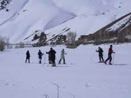

پذيرش > تریبون > گزارش كمپين > با زنان در خبر: زنان در صدر اخبار آسیب های اجتماعی در ایران


 با زنان در خبر: زنان در صدر اخبار آسیب های اجتماعی در ایران با زنان در خبر: زنان در صدر اخبار آسیب های اجتماعی در ایران
20 آبان 1390 - - نسخه قابل چاپ
تغییر برای برابری - بهنارمهرانی - زنان در این هفته نیز در صدر اخبار مربوط به آسیب های اجتماعی، اعتیاد، ایدز، اسید پاشی ...قرار داشتند و پربیراه نیست که در فاصله جنسیتی 125 در جهان قرار داشته باشد. از اخبار متعجب کننده این هفته الزامی شدن ورود زنان اسکی باز با سرپرست قانونی شان به پیست اسکی بود! احتمالا تقسیم کردن فضای مردانه و زنانه در پیست اسکی کمی با دشواری مواجه بوده است!...
جایگاه ایران در برابری حقوقی بین زن و مرد؛ 125 ام از میان 135 کشور
برخلاف آمارهای رسمی ایران، طبق گزارش 2011 فاصله جنسیتی در جهان، ایران در میان 135 کشور یک درجه عقب تر رفت و از جایگاه 124 ام در سال 2010، به جایگاه 125 ام در سال 2011 نزول یافت.
به گزارش شهرزادنیوز طبق لیست منتشره، که بر اساس آمارهای فوروم اقتصاد جهانی تنظیم می شود، اسرائیل نیز در سال 2011 سه درجه تنزل یافت و در رده 55 ام قرار گفت. در رده اول برابر حقوقی بین زن و مرد، ایسلند قرار دارد و کشورهای نروژ، فنلاند و سوئد به ترتیب در رده های دوم تا چهارم برابر حقوقی قرار دارند. پنج کشور عربستان سعودی، مالی، پاکستان، چاد و یمن درانتهای لیست برابر حقوقی قرار گرفته اند.
در ادامه گسترش محدودیت برای زنان در جامعه
ورود خانم ها به پیست اسکی بدون «سرپرست قانونی» ممنوع!

در ادامه گسترش محدودیت های جنسیتی علیه زنان، زیر عناوینی همچون تفکیک جنسیتی در دانشگاه ها، ساخت بیمارستان های تک جنسیتی و کنترل پوشش و اعمال خشونت پلیسی علیه زنان تحت عنوان گشت ارشاد این بار نوبت به تفریحات زمستانی زنان رسید.
به گزارش اعتدال، مامور انتظامات مستقر در یکی از پیست های اسکی شمال تهران مدعی شد: پلیس اماکن جمهوری اسلامی با ارسال دستور العملی به پیستهای اسکی اعلام نموده که ورود خانمها بدون سرپرست قانونی یا شوهر به پیستهای اسکی ممنوع است.
وی افزود: بنا بر این دستورالعمل ورود دختران زیر 18 سال نیز بدون پدر و مادر ممنوع می باشد و دختران بالای 18 سال تنها با سرپرست قانونی و زنان ازدواج کرده تنها به همراه شوهرشان مجاز به ورود به پیست اسکی هستند.
نیروی انتظامی تاکنون نسبت به انتساب محدودیت حضور مردم در برخی مکانها از جمله کویر مرنجاب و پیست های اسکی به این نیرو ، واکنش رسمی نشان نداده است.
گسترش آسیب های اجتماعی، بی توجهی و انکار مسئولان
5 تا 6 درصد از كل معتادان كشور را زنان تشكيل مي دهند
در حالی که آمارها نشان از رشد صعودی آسیب های اجتماعی در میان زنان به ویژه زنان آسیب پذیر دارد تنها بازخورد مسئولان انکار و تلاش مضاعف برای محدود کردن و خانه نشین کردن آنان است. به نظر می رسد بحران های اجتماعی آنچنان از کنترل خارج شده است که تنها راه را پاک کردن صورت مسئله دانسته اند.
به گزارش ایسنا، بیش از 72 هزار زن معتاد در کشور وجود دارد که اکثر آن ها در جنوب تهران، کارتن خواب و بی سواد و بی خانواده هستند.
ژاله شادی طلب، جامعه شناس و محقق حوزه زنان با اشاره به تصور عموم مبني بر ايمن بودن زنان خانهدار از آسيبهاي اجتماعي، گفت: 80 درصد از زنان معتاد مراجعه كننده به مراكز درمان اعتياد شهر تهران، خود را خانهدار معرفي كردهاند.
وی به دلیل متفاوت بودن ويژگيهاي اقتصادي و اجتماعي متفاوت زنان معتاد در مناطق مختلف شهر تهران حوزه مطالعاتي تحقيق خود را بر سه نقطه جنوب، جنوب غرب و مركز شهر تقسيم كرده است. او وضعیت زنان معتاد جنوب شهر تهران را اسفناک خوانده است.
در این تحقیق همچنین چگونگی ابتلا زنان به اعتیاد در مناطق مختلف و مشکلات درمان و ترک و پس از درمان آنها بررسی شده است.
افزایش تصاعدی ایدز در میان زنان خیابانی و جوانان
با اینکه همچنان بیشترین آمار ابتلا به ایدز در میان معتادان و از روشهای تزریقی است، اماشاهد رشد این بیماری از طریق روابط جنسی پرخطر در میان زنان خیابانی و جوانان هستیم. به گفته دکتر عباس صداقت، رئیس دفتر مدیریت بیماریهای واگیردار وزارت بهداشت، طبق آمار، در سال 1389، انتقال ویروس ایدز (اچ آی وی) در میان زنان و جوانان ایران 9/66 درصد از طریق مصرف مواد تزریقی و 1/21 درصد از طریق ارتباطات جنسی کنترلنشده بوده است.
وی با اشاره به آمار ثبت شده از سال 1365، همچنین گفت که قبلا ً 10 درصد از طریق ارتباطات جنسی کنترل نشده دچار ویروس ایدز بودند که رقم فعلی 1/21 درصد، افزایشی تصاعدی را نشان می دهد.
فعاليت 31 خانه سلامت برای ساماندهی دختران در معرض آسيب در كشور و کمبود بودجه
خانه های سلامت با کمبود بودجه مواجه شده اند. در حال حاضر از 31 خانه سلامت در ایران بیشترین تعداد در استان های تهران و اصفهان و کمترین در استان های همدان و ایلام هستند. دختران در معرض آسيبي كه از طريق مراكز مداخله در درمان، اورژانس اجتماعي و نيروي انتظامي و با راي دادگاه به بهزيستي معرفي ميشوند راهي خانههاي سلامت شده و در آنجا فعاليتهاي مددكاري براي بازگرداندن اين دختران به خانوادههايشان آغاز ميشود. رديف اعتبارات براي حمايتهاي اين بخش از بهزيستي حدود 5 ميليارد تومان است اما به گفته مدیر مديركل دفتر پيشگيري از آسيبهاي اجتماعي سازمان بهزيستي این مبلغ صرف برنامههاي متعددي ميشود و نميتوانيم پول زيادي را براي اين بخش تدارك ببنيم.!
به گفته وی طی سال گذشته حدود 500 دختر در معرض آسيب به خانههاي سلامت وارد شدند و: قريب به 90 درصد اين دختران به نزد خانواده و اقوامشان بازگردانده شدهاند. مدت زمان نگهداري در خانه سلامت حداكثر شش ماه است و در صورت عدم موفقيت در بازگرداندن دختران به خانوادههايشان مجموعه فعاليتهاي توانمندسازي اعم از آموزش و ايجاد اشتغال براي آنان شروع ميشود.
متهم پرونده اسيدپاشي در زندان همدان خودكشي كرد
«مونا.ك» زني ناشناس كه در 15 ارديبهشت ماه سال 89 اقدام به اسيدپاشي بر روي «طاهره بهرامي» كرده بود، روز پنجشنبه هفته گذشته در زندان همدان خودكشي كرده است. دكتر علياحسان صالح، مديركل پزشكي قانوني استان همدان روز شنبه در گفتوگو با خبرنگار حقوقي ايسنا با تاييد خبر خودكشي مونا، گفت: در حال حاضر جنازه وي در پزشكي قانوني همدان است.
زنان در زندان

تایید حکم شش ماه حبس تعزیری مهدیه گلرو در دادگاه تجدید نظر
حکم شش ماه حبس تعزیری مهدیه گلرو فعال دانشجویی در شعبه ۵۴ دادگاه انقلاب تایید شد. این حکم در حالی تایید شد که این فعال دانشجویی آخرین روزهای حکم پیشین خود را در زندان اوین میگذراند و در صورت عدم تایید این رای در اوایل آذر ماه امسال آزاد میشد و با تایید این حکم زمان آزادی او به اردیبهشت ۹۱ موکول خواهد شد.
احضار ژيلا كرم زاده به اجراي احكام زندان اوين
ژیلا کرمزاده مکوندی، بر طبق احضارياي كه در روزهاي گذشته دريافت كردهاست، ميبايست ظرف مدت 20 روز خود را به دايره اجراي احكام زندان اوين معرفي كند.این احضاریه در حالی صادر شده که هنوز حکم تجدید نظر دادگاه به وی ابلاغ نشده بود. پس از پيگيري وگیل وی مشخص شد كه او در دادگاه تجديدنظر به 2 سال حبس تعزيري و 2 سال حبس تعليقي محکوم شده است.
زنان در جهان
نگرانی زنان افغانستان از بازگشت طالبان و استمداد از جامعه جهانی
نگرانی زنان افغانستان از بازگشت طالبان به قدرت، پس از خروج نیروهای غربی تا سال 2014 از این کشور، چنان بالا گرفته است که گلالی نور صافی، نماینده پارلمان، جامعه جهانی را به حمایت از زنان افغان، حتا پس از خروج، فراخوانده است.
به گزارش رویترز، وی که در کنفرانس سبزها در برلین سخن می گفت، با اشاره به وخامت اوضاع پس از خروج نیروهای اتحاد شوروی سابق از افغانستان، از تکرار آن فاجعه پس از خروج نیروهای غربی هشدار داد و گفت که تنها فکر به این که آن اوضاع برگردد، هر زن افغان را بر خود می لرزاند.
روسپی گری در تایوان آزاد شد
با تصویب قانون جدیدی در تایوان، قانون ممنوعیت روسپی گری در این کشور، پس از دهها سال، ملغی اعلام شد. این قانون تنها روسپی ها را مورد پیگرد قرار می داد، اما دلالان آن ها از مجازات معاف بودند.
به گزارش خبرگزاری اتریش، چیانگ یی - هوآ، وزیر کشور تایوان، در این رابطه اعلام کرد که اکنون روسپی گری می تواند تنها در مناطق مشخصی معروف به "منطقه چراغ قرمز" در حومه ها ی شهرها ادامه داشته باشد و مجازات آن در خارج از مناطق تعیین شده برای روسپی ها و مشتریان تا 1000 دلار و برای دلالان زنان تا 1600 دلار خواهد بود.
انتخاب دختر شایستۀ سال ۲۰۱۱ و اعتراض فعالان حقوق زنان به این مراسم
یک دختر 22 سالۀ اهل ونزوئلا روز یکشنبه به عنوان دختر شایستۀ سال 2011 انتخاب شد. وی فارغ التحصیل رشتۀ منابع انسانی از دانشگاه کاراکاس است.
ایویان سارکوس در یک موسسۀ سمعی بصری به کار اشتغال دارد و دارای 13 خواهر و برادر است. وی که در سنین خردسالی والدین خود را از دست داده است می گوید قصد دارد عمده فعالیت خود را بر کمک به کودکان در کشورهای فقیر متمرکز کند. ایویان سارکوس 22 ساله که 1 متر 79 سانتیمتر قد دارد تنها به یک زبان، اسپانیولی، صحبت می کند و به یک خانوادۀ فقیر تعلق دارد.
همزمان با برگزاری این مراسم که در پارک “ارلس کورت” در لندن برگزار شد، تعدادی از فعالان حقوق زنان با تجمع در این محل به برگزاری این مراسم اعتراض کردند. معترضان فمینیست در این تجمع برگزاری این مسابقات برای انتخاب دختر شایسته را توهین به توانایی های زنان دانسته و شعارهایی مبنی بر اینکه زن بودن به معنای مسابقه دادن نیست سر دادند.
این مراسم امسال به بهانۀ شصتمین سالگرد تاسیس آن در سال 1951 در لندن برگزار شد.
ارسال به
بالاترین
،
توییتر
،
فریندفید
،
فیسبوک
در همين بخش :
 دهمین دورۀ مراسم تندیس صدیقه دولت آبادی ۱۳۹۲ دهمین دورۀ مراسم تندیس صدیقه دولت آبادی ۱۳۹۲
کارت پستالهایی به بهانهی هشت مارس و به یاد همهی مبارزین راه برابری
بیانیه بیش از 350 تن از مدافعان حقوق زنان به مناسبت روز جهانی زن؛ زنان هر روز فرودستتر میشوند
لباسی که برای تن ما دوخته اند! /اعظم بهرامی
چالشها و چشمانداز فعالیت مدنی زنان
ديگر بخش ها :
طرح یک میلیون امضا
|
مقالات
|
سایت نوشته ها
|
اخبار
|
گزارش كمپين
|
گفت و گو
|
علیه سکوت
|
كوچه به كوچه
|
نامه های شما
|
گزارش ویژه
|
گفتگو با اعضا
|
ویژه سالگرد کمپین
|
تصویر برابری
|
دل آرام علی
|
تریبون
|
مقالات
|
تاریخ شفاهی
|
خارج از چارچوب
|
کتابخانه
|
درباره کمپین
|
کمپین در شهرها
|
کمپین در بند
|
صدای تغییر
|
ویژه 22 خرداد
|
لایحه حمایت از خانواده
|
گالری
|
عشا مومنی
|
امیر یعقوبعلی
|
خدیجه مقدم
|
راحله عسگری زاده و نسیم خسروی
|
پروین اردلان،جلوه جواهری، مریم حسین خواه، ناهید کشاورز
|
زینب پیغمبرزاده
|
سعیده امین، سارا ایمانیان، محبوبه حسین زاده، ناهید کشاورز و همایون نامی
|
احترام شادفر
|
نسیم سرابندی زاده،فاطمه دهدشتی
|
وبلاگ مهمان
|
پرونده خرم آباد
|
دستگیری ها
|
مریم مالک
|
پرستو اللهیاری
|
مهرنوش اعتمادی
|
سمیه رشیدی
|
Other Languages
|
همراهان
|
«فراخوان کمپین ده روز با بهاره هدایت»
| English
|